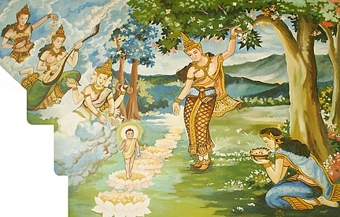
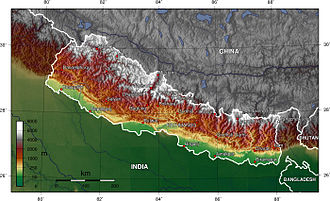
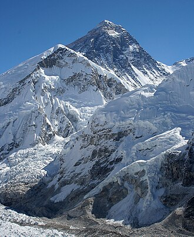

Nepal
Article Talk
From Wikipedia, the free encyclopedia
This article is about the country. For other uses, see Nepal (disambiguation).
Nepal,[a] officially the Federal Democratic Republic of Nepal,[b] is a landlocked country in South Asia. It is mainly situated in the Himalayas, but also includes parts of the Indo-Gangetic Plain. It borders the Tibet Autonomous Region of China to the north, and India to the south, east, and west, while it is narrowly separated from Bangladesh by the Siliguri Corridor, and from Bhutan by the Indian state of Sikkim. Nepal has a diverse geography, including fertile plains, subalpine forested hills, and eight of the world's ten tallest mountains, including Mount Everest, the highest point on Earth. Kathmandu is the nation's capital and the largest city. Nepal is a multi-ethnic, multi-lingual, multi-religious and multi-cultural state, with Nepali as the official language.
The name "Nepal" is first recorded in texts from the Vedic period of the Indian subcontinent, the era in ancient Nepal when Hinduism was founded, the predominant religion of the country. In the middle of the first millennium BC, Gautama Buddha, the founder of Buddhism, was born in Lumbini in southern Nepal. Parts of northern Nepal were intertwined with the culture of Tibet. The centrally located Kathmandu Valley is intertwined with the culture of Indo-Aryans, and was the seat of the prosperous Newar confederacy known as Nepal Mandala. The Himalayan branch of the ancient Silk Road was dominated by the valley's traders. The cosmopolitan region developed distinct traditional art and architecture. By the 18th century, the Gorkha Kingdom achieved the unification of Nepal. The Shah dynasty established the Kingdom of Nepal and later formed an alliance with the British Empire, under its Rana dynasty of premiers. The country was never colonised but served as a buffer state between Imperial China and British India. Parliamentary democracy was introduced in 1951 but was twice suspended by Nepalese monarchs, in 1960 and 2005. The Nepalese Civil War in the 1990s and early 2000s resulted in the establishment of a secular republic in 2008, ending the world's last Hindu monarchy.
The Constitution of Nepal, adopted in 2015, affirms the country as a secular federal parliamentary republic divided into seven provinces. Nepal was admitted to the United Nations in 1955, and friendship treaties were signed with India in 1950 and China in 1960. Nepal hosts the permanent secretariat of the South Asian Association for Regional Cooperation (SAARC), of which it is a founding member. Nepal is also a member of the Non-Aligned Movement and the Bay of Bengal Initiative. The Nepalese Armed Forces are the fifth-largest in South Asia; and are notable for their Gurkha history, particularly during the world wars, and have been a significant contributor to United Nations peacekeeping operations.
Etymology
Main article: Name of Nepal
Before the unification of Nepal, the Kathmandu Valley was known as Nepal.[c] The precise origin of the term Nepāl is uncertain. Nepal appears in ancient Indian literary texts dated as far back as the fourth century BC.[which?] An absolute chronology can not be established, as even the oldest texts may contain anonymous contributions dating as late as the early modern period. Academic attempts to provide a plausible theory are hindered by the lack of a complete picture of history and insufficient understanding of linguistics or relevant Indo-European and Tibeto-Burman languages.[17] According to Hindu mythology, Nepal derives its name from an ancient Hindu sage called Ne, referred to variously as Ne Muni or Nemi. According to Pashupati Purāna, as a place protected by Ne, the country in the heart of the Himalayas came to be known as Nepāl.[18][19][d] According to Nepāl Mahātmya,[e] Nemi was charged with protection of the country by Pashupati.[20] According to Buddhist mythology, Manjushri Bodhisattva drained a primordial lake of serpents to create the Nepal valley and proclaimed that Adi-Buddha Ne would take care of the community that would settle it. As the cherished of Ne, the valley would be called Nepāl.[21] According to Gopalarājvamshāvali, the genealogy of ancient Gopala dynasty compiled c.1380s, Nepal is named after Nepa the cowherd, the founder of the Nepali scion of the Abhiras. In this account, the cow that issued milk to the spot, at which Nepa discovered the Jyotirlinga of Pashupatināth upon investigation, was also named Ne.[17] Norwegian indologist Christian Lassen had proposed that Nepāla was a compound of Nipa (foot of a mountain) and -ala (short suffix for alaya meaning abode), and so Nepāla meant "abode at the foot of the mountain". He considered Ne Muni to be a fabrication.[22] Indologist Sylvain Levi found Lassen's theory untenable but had no theories of his own, only suggesting that either Newara is a vulgarism of sanskritic Nepala, or Nepala is Sanskritisation of the local ethnic;[23] his view has found some support though it does not answer the question of etymology.[24][25][26][17] It has also been proposed that Nepa is a Tibeto-Burman stem consisting of Ne (cattle) and Pa (keeper), reflecting the fact that early inhabitants of the valley were Gopalas (cowherds) and Mahispalas (buffalo-herds).[17] Suniti Kumar Chatterji believed Nepal originated from Tibeto-Burman roots - Ne, of uncertain meaning (as multiple possibilities exist), and pala or bal, whose meaning is lost entirely.[27]
History
Main article: History of Nepal
Ancient Nepal
By 55,000 years ago, the first modern humans had arrived on the Indian subcontinent from Africa, where they had earlier evolved.[28][29][30] The earliest known modern human remains in South Asia date to about 30,000 years ago.[31] The oldest discovered archaeological evidence of human settlements in Nepal dates to around the same time.[32]
After 6500 BC, evidence for the domestication of food crops and animals, construction of permanent structures, and storage of agricultural surplus appeared in Mehrgarh and other sites in what is now Balochistan.[33] These gradually developed into the Indus Valley civilisation,[34][33] the first urban culture in South Asia.[35] Prehistoric sites of palaeolithic, mesolithic and neolithic origins have been discovered in the Siwalik hills of Dang district.[36] The earliest inhabitants of modern Nepal and adjoining areas are believed to be people from the Indus Valley civilisation. It is possible that the Dravidian people whose history predates the onset of the Bronze Age in the Indian subcontinent (around 6300 BC) inhabited the area before the arrival of other ethnic groups like the Tibeto-Burmans and Indo-Aryans from across the border.[37] By 4000 BC, the Tibeto-Burmese people had reached Nepal either directly across the Himalayas from Tibet or via Myanmar and north-east India or both.[38] Stella Kramrisch (1964) mentions a substratum of a race of pre-Dravidians and Dravidians, who were in Nepal even before the Newars, who formed the majority of the ancient inhabitants of the valley of Kathmandu.[39]
By the late Vedic period, Nepal was being mentioned in various Hindu texts, such as the late Vedic Atharvaveda Pariśiṣṭa and in the post-Vedic Atharvashirsha Upanishad.[40] The Gopal Bansa was the oldest dynasty to be mentioned in various texts as the earliest rulers of the central Himalayan kingdom known by the name 'Nepal'.[41] The Gopalas were followed by Kiratas who ruled for over 16 centuries by some accounts.[42] According to the Mahabharata, the then Kirata king went to take part in the Battle of Kurukshetra. In the south-eastern region, Janakpurdham was the capital of the prosperous kingdom of Videha or Mithila, that extended down to the Ganges, and home to King Janaka and his daughter, Sita.
Geography
Main articles: Geography of Nepal and Geology of Nepal
Nepal is of roughly trapezoidal shape, about 800 kilometres (500 mi) long and 200 kilometres (120 mi) wide, with an area of 147,516 km2 (56,956 sq mi). It lies between latitudes 26° and 31°N, and longitudes 80° and 89°E. Nepal's defining geological processes began 75 million years ago when the Indian plate, then part of the southern supercontinent Gondwana, began a north-eastward drift caused by seafloor spreading to its south-west, and later, south and south-east.[75] Simultaneously, the vast Tethyn oceanic crust, to its northeast, began to subduct under the Eurasian plate.[75] These dual processes, driven by convection in the Earth's mantle, both created the Indian Ocean and caused the Indian continental crust eventually to under-thrust Eurasia and to uplift the Himalayas.[75] The rising barriers blocked the paths of rivers creating large lakes, which only broke through as late as 100,000 years ago, creating fertile valleys in the middle hills like the Kathmandu Valley. In the western region, rivers which were too strong to be hampered, cut some of the world's deepest gorges.[76] Immediately south of the emerging Himalayas, plate movement created a vast trough that rapidly filled with river-borne sediment[77] and now constitutes the Indo-Gangetic Plain.[78] Nepal lies almost completely within this collision zone, occupying the central sector of the Himalayan arc, nearly one-third of the 2,400 km (1,500 mi)-long Himalayas,[79][80][81][82][83][84] with a small strip of southernmost Nepal stretching into the Indo-Gangetic plain and two districts in the northwest stretching up to the Tibetan plateau.[76]
Nepal is divided into three principal physiographic belts known as Himal-Pahad-Terai.[g] Himal is the mountain region containing snow and situated in the Great Himalayan Range; it makes up the northern part of Nepal. It contains the highest elevations in the world including 8,848.86 metres (29,032 ft) height Mount Everest (Sagarmāthā in Nepali) on the border with China. Seven other of the world's "eight-thousanders" are in Nepal or on its border with Tibet: Lhotse, Makalu, Cho Oyu, Kangchenjunga, Dhaulagiri, Annapurna and Manaslu. Pahad is the mountain region that does not generally contain snow. The mountains vary from 800 to 4,000 metres (2,600 to 13,100 ft) in altitude, with progression from subtropical climates below 1,200 metres (3,900 ft) to alpine climates above 3,600 metres (11,800 ft). The Lower Himalayan Range, reaching 1,500 to 3,000 metres (4,900 to 9,800 ft), is the southern limit of this region, with subtropical river valleys and "hills" alternating to the north of this range. Population density is high in valleys but notably less above 2,000 metres (6,600 ft) and very low above 2,500 metres (8,200 ft), where snow occasionally falls in winter. The southern lowland plains or Terai bordering India are part of the northern rim of the Indo-Gangetic Plain. Terai is the lowland region containing some hill ranges. The plains were formed and are fed by three major Himalayan rivers: the Koshi, the Narayani, and the Karnali as well as smaller rivers rising below the permanent snowline. This region has a subtropical to tropical climate. The outermost range of the foothills called Sivalik Hills or Churia Range, cresting at 700 to 1,000 metres (2,300 to 3,280 ft), marks the limits of the Gangetic Plain. Broad, low valleys called Inner Terai Valleys (Bhitri Tarai Upatyaka) lie north of these foothills in several places.
The Indian plate continues to move north relative to Asia at about 50 mm (2.0 in) per year.[85] This makes Nepal an earthquake-prone zone, and periodic earthquakes that have devastating consequences present a significant hurdle to development.[86] Erosion of the Himalayas is a very important source of sediment, which flows to the Indian Ocean.[87] Saptakoshi, in particular, carries a huge amount of silt out of Nepal but sees extreme drop in Gradient in Bihar, causing severe floods and course changes, and is, therefore, known as the sorrow of Bihar. Severe flooding and landslides cause deaths and disease, destroy farmlands and cripple the transport infrastructure of the country, during the monsoon season each year.
Culture
Main article: Culture of Nepal